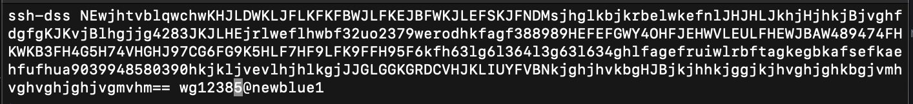

User Guide¶
Basics¶
Commands you need to type into your terminal window (after logging in to BlueCrystal) are written in block quotes as below. Notes are preceeded by a #:
type_this_into_terminal_window #Helpful extra instructions, do not type this into the terminal window
Install on BlueCrystal3¶
0 Get IT to allow you to use Gaussian on BlueCrystal, email hpc-help@bristol.ac.uk asking them to set up and give your account access to use Gaussian
1 Get read access to this repository (email will.gerrard@bristol.ac.uk with your github account details or request access through github)
2 Set up your environment:
2.1 Load the conda module
module load languages/python-anaconda-5.0.1-2.72.2 Create a conda environment
conda create --name myenv2.3 Install openbabel and numpy
conda install -c openbabel -n myenv openbabel conda install -n myenv numpy scipy2.4 Activate the environment you just made, this should put add “(myenv)” to the far left of where you input Commands
source activate myenv
3 Set up Github and get a copy of auto-ENRICH:
3.1 Find your ssh key, we do this by first going to your home folder in BlueCrystal then opening .ssh/id_dsa.pub (a text file) containing your key
vim .ssh/id_dsa.pubExample ssh key
3.2 Copy the key (all that text) then type :q! to exit
:q! #Close file3.3 Login to Github.com then go to Settings - SSH and GPG keys - New SSH key and paste the key and give it a simple title like BlueCrystal3
Navigate through github.com to input ssh key
3.4 Enable git
module load tools/git-2.18.03.5 Copy auto-ENRICH files, it’ll make a folder called auto-ENRICH containing all the files
git clone --recurse-submodules git@github.com:wg12385/auto-ENRICH.git
4 Automatically set up things so when you log in to be able to run auto-_ENRICH. If you don’t want to do this type the commands in step 4.2 into your terminal everytime you want to run auto-ENRICH
4.1 Open .bashrc, this is a script that runs automatically when you log in to BlueCrystal3
vim .bashrc4.2 Tell BlueCrystal to automatically load python and git and then activate your conda environment.
module load languages/python-anaconda-5.0.1-2.7 module load tools/git-2.18.0 source activate myenv
Run on BlueCrystal3¶
auto-ENRICH automates moving from a conformational search output to getting out NMR parameters. Save the output of your conformational search to one .xyz file (that contains lots of conformers) for a particular molecule
1 Make a folder with the molecule name and put your .xyz file in it, cd into that folder
2 Copy the preferences file from the auto-ENRICH folder then open it and decide what you want to run. If the auto-ENRICH folder is 2 directories above your molecules folder (which you are now in) type:
cp -rf ../../auto-ENRICH/ENRICH.prefs ./ #The cp means copy, first place is where it's copying from, #the other is where its copying to, your current directory #If its more/less folders above use more/less ../'s before the auto-ENRICH #This applies for all that follows
3 Edit the preferences
vim ENRICH.prefs #Press the i key then edit the file :wq #Save and then close the file
4 Create geometry optimisation and frequency correction input files for Gaussian based on your choices in ENRICH.prefs by running xyz_to_opt.py script from the folder containing your .xyz file
python ../../auto-ENRICH/RUN/xyz_to_opt.py
This will produce an optcom folder filled with .com files and .qsub file(‘s)
5 Submit job files for optimisation and frequency correction (conformer relative energies)
qsub molecule1_NMR_0.qsub #If you're submitting over 50 conformers you will have several of these to submitting qsub molecule1_NMR_1.qsub qsub molecule1_NMR_2.qsub # ... ... ...
6 Wait for the calculations to complete…
7 Run move_complete.py to sort your calculations into successes (they’ll be moved to a folder called optlog) and fails (failed folder)
python ../../auto-ENRICH/RUN/move_complete.py
8 Create NMR input files by running opt_to_nmr.py. This will also create a file called ‘population.txt’ containing conformer energies
python ../../auto-ENRICH/RUN/opt_to_nmr.py
This will produce an nmrcom folder filled with .com files and .qsub file(‘s)
9 Wait for the calculations to complete…
10 Run move_complete.py to sort your calculations into successes (they’ll be moved to a folder called nmrlog) and fails (failed folder)
python ../../auto-ENRICH/RUN/move_complete.py
11 Run nmr_process.py to get the raw DFT NMR experimental measurables out, this will be numbered based on atoms in the .xyz file and assumes all atoms inequivalent on NMR timescale (doesn’t deal with methyls/symmetry). This will produce an OUTPUT folder with the .xyz files for all your DFT geometry optimised conformers
python ../../auto-ENRICH/RUN/nmr_process.py
12 Produce equivalency file: Open one of the conformers from your original input .xyz in PyMol (normally, not in terminal), In the sidebar go to H - everything then S - sticks and then L - atom identifiers - ID. While in your molecules folder make a file called “Groups.txt” and make list of “your own label” - numbers of atoms that are equivalent (eg H’s on methyl groups) .
# This is how you'd make the .txt file in terminal, but using notepad is fine vim groups.txt # Input all the equivalency eg # H1 - 72,73,74 :wq # save and close fileFormat for doing equivalency maths, note this molecule has C2 symmetry
13 Run nmr_process.py with equivalency file by specifying equiv as an argument. This will produce two more files in OUTPUT ending in _equiv.txt and _equiv_pretty.txt, The pretty one will show various J couplings > 0.5 Hz and NOEs.
python ../../auto-ENRICH/RUN/nmr_process.py equiv
Epilogue Deal with the failures in the failed file by resubmitting them manually